Image Warping and Mosaicing
Proj Architecture
To complete this project I a modular, OOP paradigm w/in Python. The logic is divided into four different classes:
- HomographyCalculator: This class implments Direct Linear Transform (DLT) and Singular value Decomposition (SVD) to get the homography matrix H.
- ImageWarper: this class handles the inverse warping and implements nearest neighbor and Bilinear interpolation
- MosaicBlender: managers the alignment of warped images and implements weighted blending using distance transform AKA Feathering.
- PointCollector: Just used clickable interface leveraging
matplotlib.ginputto select correspondences, with caching too
Everything is coded up leverating NumPy since OpenCV functions like cv2.findHomography, cv2.warpPerspective, etc weren't allowed.
To get transformation between images being projective (a perspective transform), my photos were taken by fixing the center of project and rotating the camera. So essentially, I tried to twist my phone on the axis of where the camera is (since iphone cameras are offset) and tried not to wiggle my phone on its x axis. To make the mosaicing possible, between shots there was some photo overlap.
My Photos
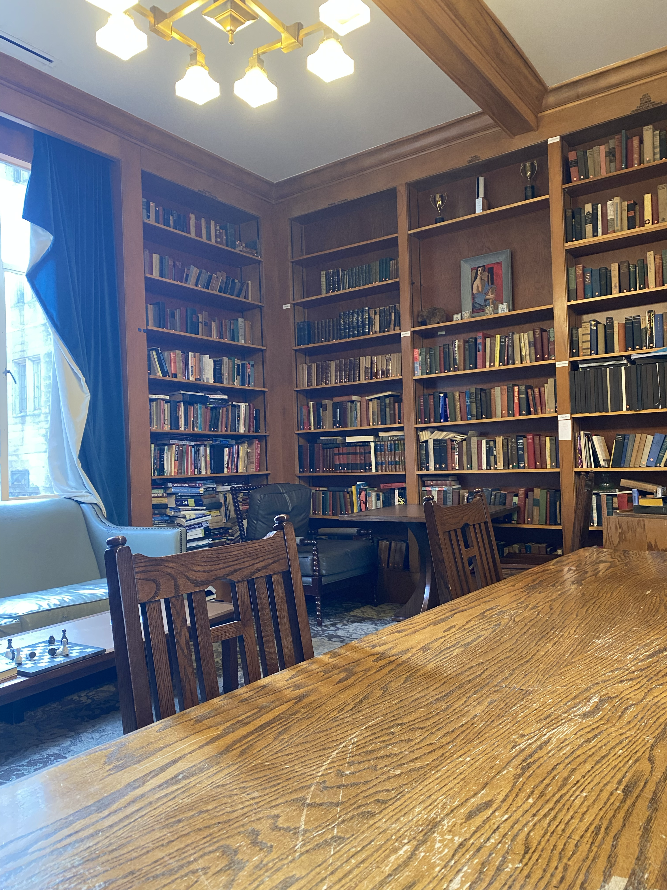
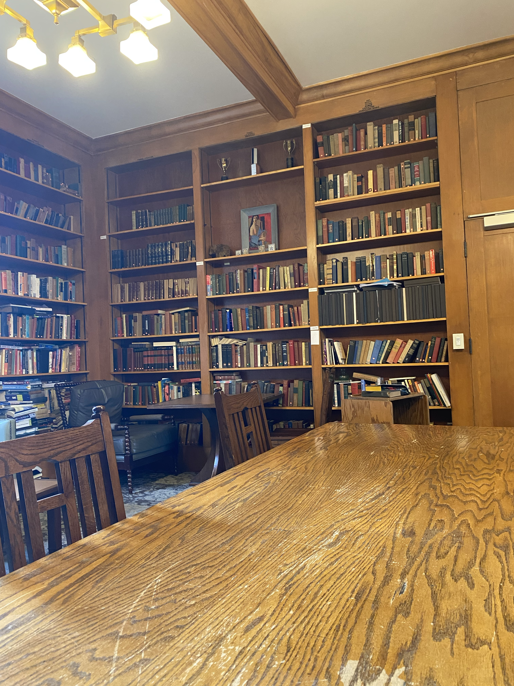
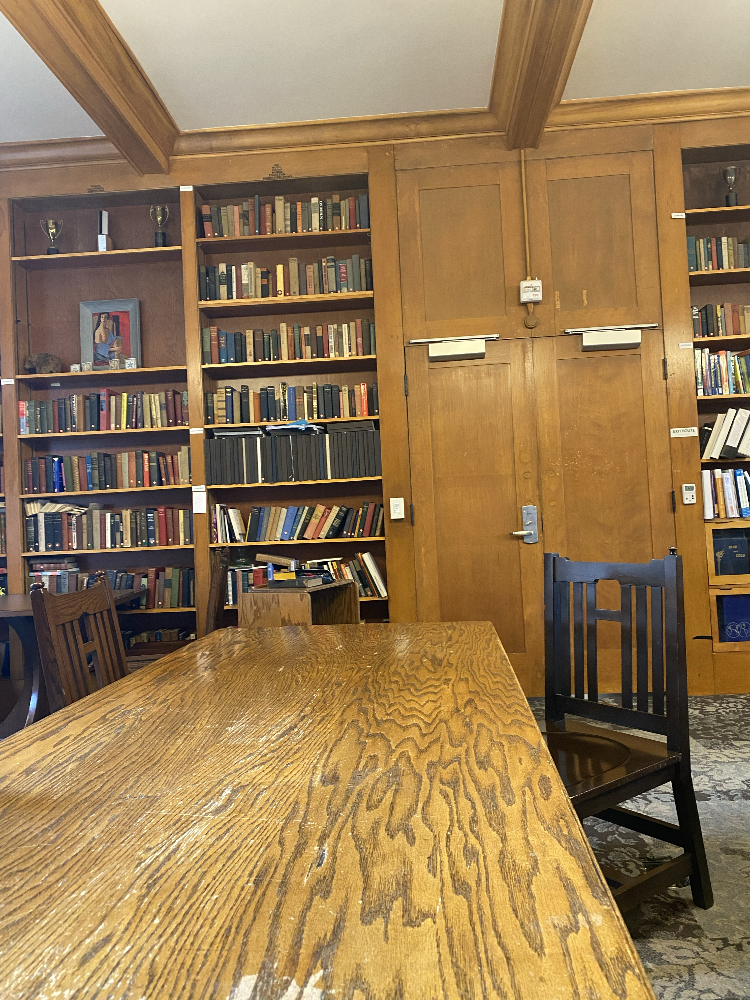
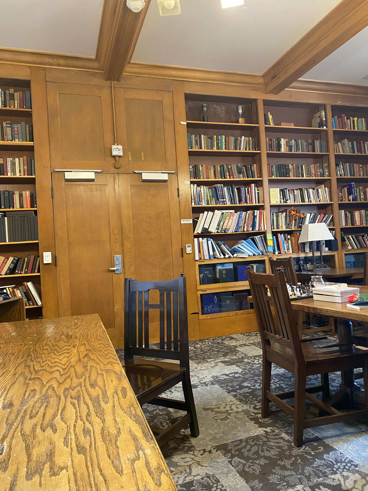
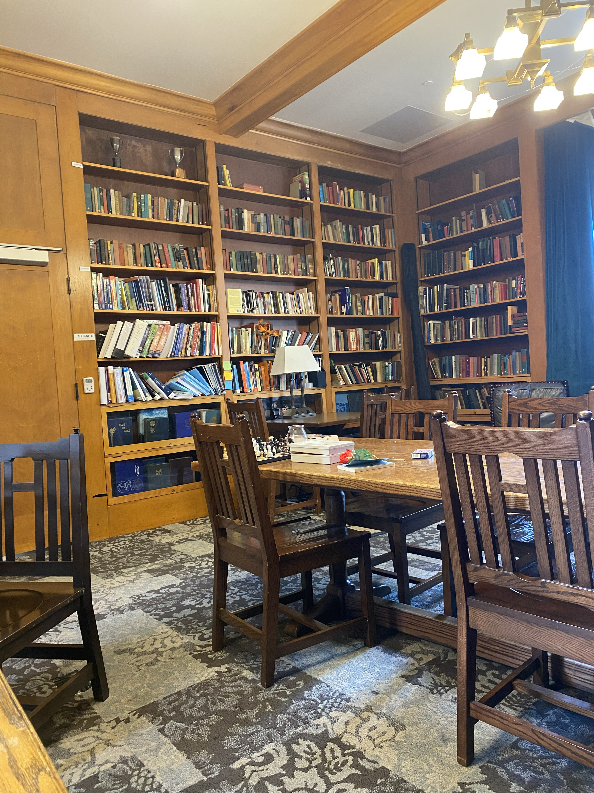
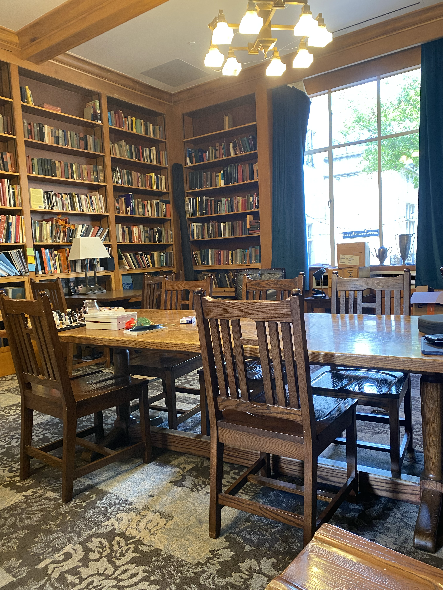
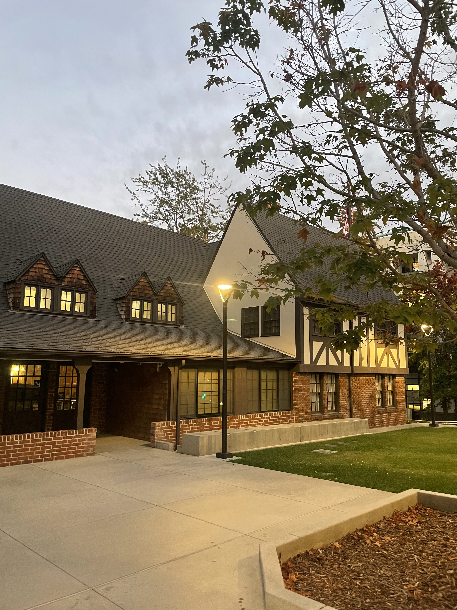
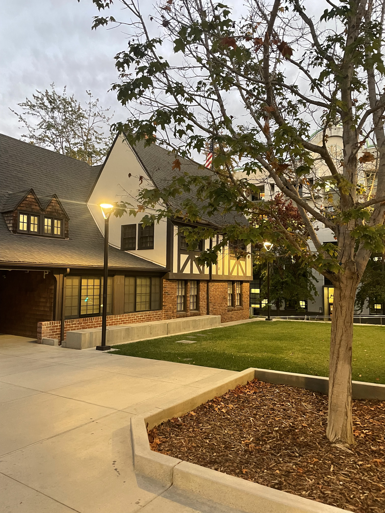
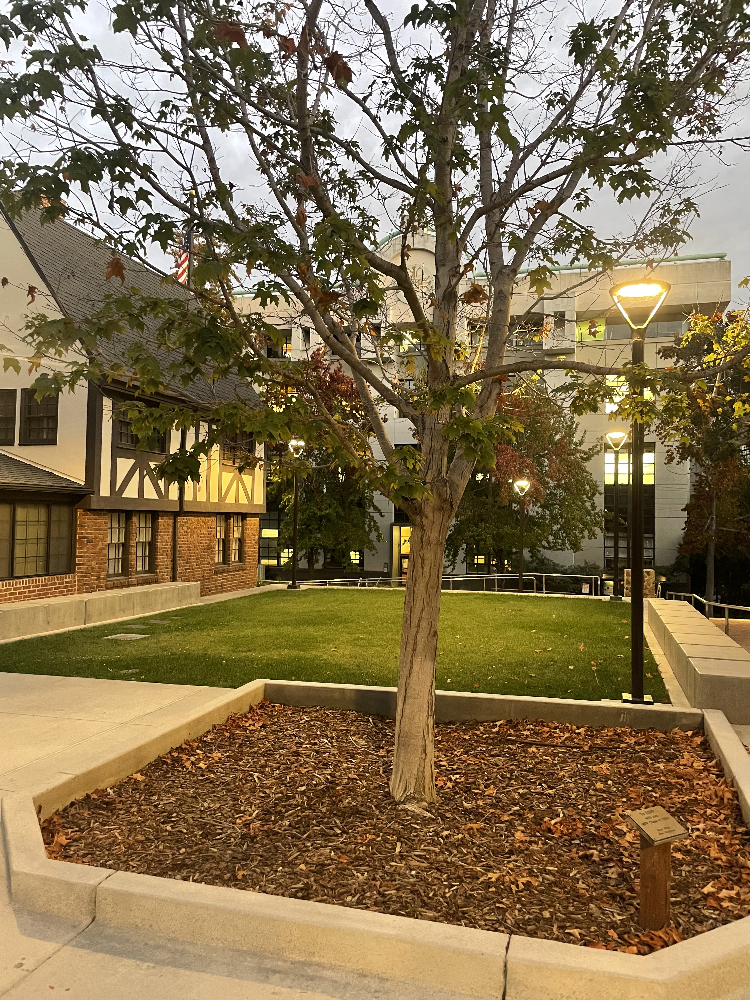
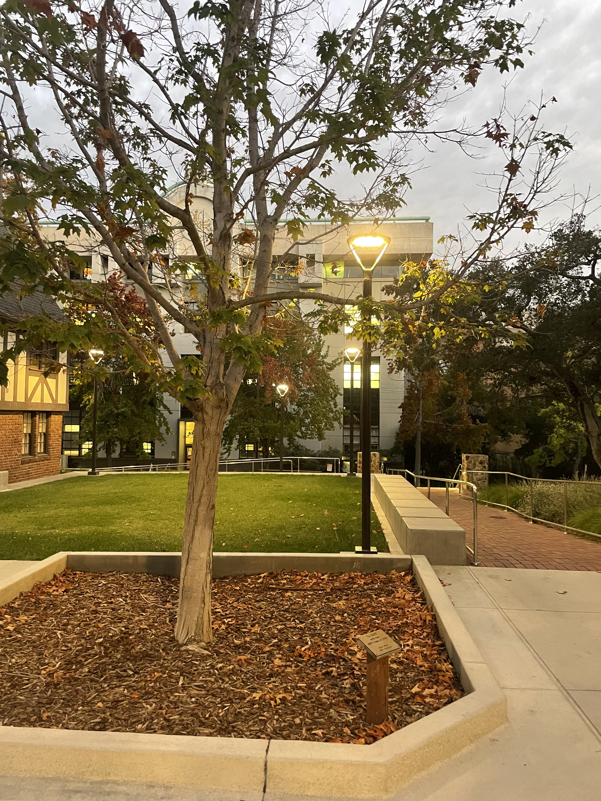
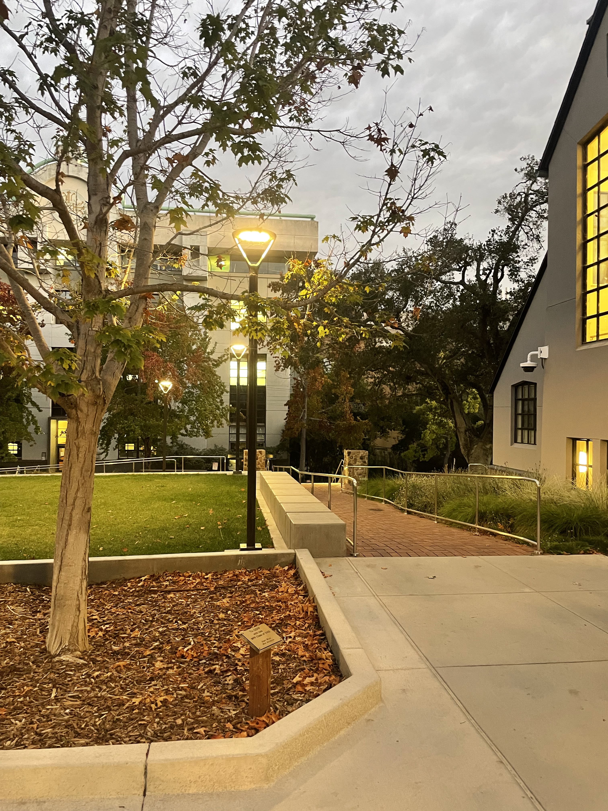
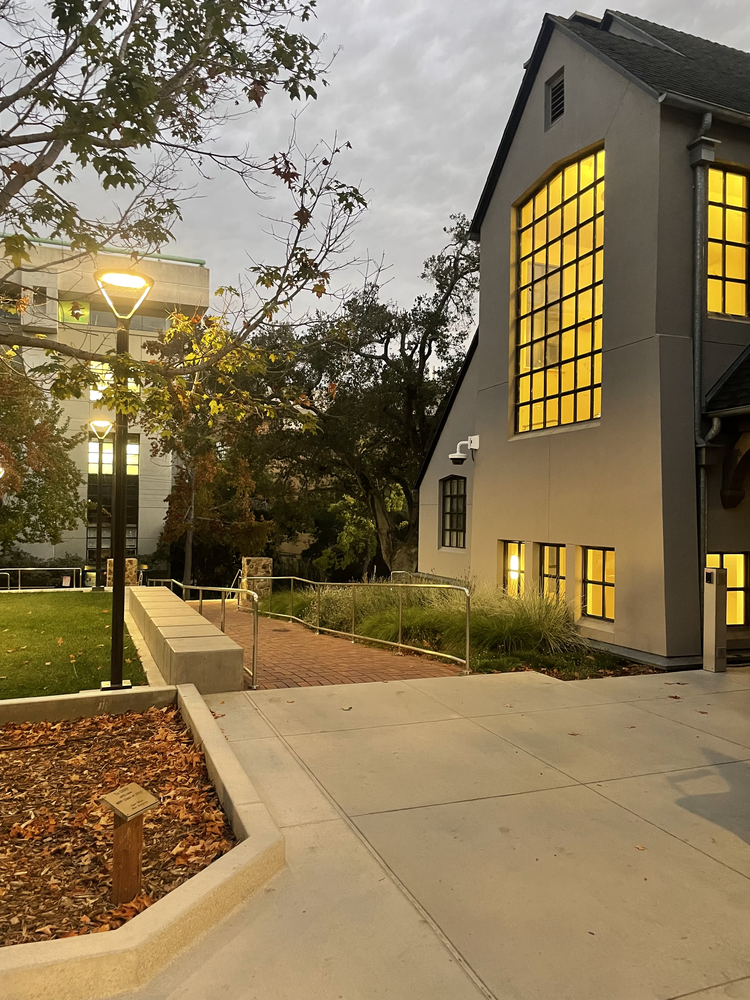
Recovering Homographies
For image alignmen the projective transformation between photos needed to be recovered. This transformation is a Homography, which is a a 3x3 matrix \(H\) w/ 8 degrees of freedom. The last element is a scaling factor normalised to 1. The relationship betwee point \(p\) in one image and its corresponding point \(p'\) in another is given by: \(p' = Hp\).
Using DLT & SVD
I used DLT, so given a set of corresponding points (same places in the overlap of two images) \((x, y)\) and \((x', y')\),up a system of linear equations \(Ah = 0\), where \(h\) is a vector containing the 9 elements of \(H\) can be made. Thus, frome each set of points from the same place (a correspondence) I got two equations, forming two rows in the matrix A:
A minimum of 4 points (8 equations) are required. For improvemtns against noise, I use more point, (the returns were extremely diminishing after 6 points), to get a overdetermined system. The leasat squared solution which minimizes \(||Ah||\) with SVD. The solution \(h\) is the eigenvector which represents the smallest singular value of \(A\).
Getting Correspondences
To get the corresponded I used matplotlib.ginput, to put the adjacent images side by side and then I would click points that were within the overlap of both images and saved these points.
Correspondences from matplotlib.ginput

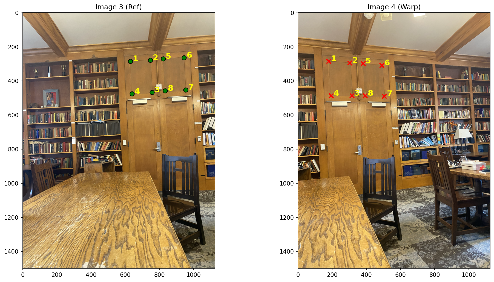

Warping
With \(H\) is recovered, the images are warped into alignment. I used Inverse Warping to prevent holes new image. For every pixel in the destination image, I get the corresponding location in the src image via the inverse homography: \(p = H^{-1}p'\).
.blurb {To play with those same principles of homography and warping I wanted to project one image onto a planar surface in another image. I calculated the homography mapping the four corners of the source image to four selected points on the target surface, warp the source, and overlay it. I did it for the starry night on the campinille but with more time I want to more creatively experiement, and leverage blending from the last project to make it look nicer.

Blending seperate Images into a Mosaic
Now I warp all images into a common reference frame, and then blend them to create a (mostly) seamless mosaic.
Multi-Image Pipeline
For mant of images, I first get the pairwise homographies. Then a central image is chosen as the reference frame. Homographies get chained via matrix multiplication and inverstion in order to transform all other images into this reference frame (for example: \(H_{3\to1} = H_{2\to1} \cdot H_{3\to2}\)). data for this section -->
Part B: Auto Feature Matching and Mosaicing
In A i had to manuallt selecting points, which is is not only error pront (but was insanely monotonous and tedious). Now B I made pipeline based on the paper "Multi-Image Matching using Multi-Scale Oriented Patches".
My main classes for new pipeline were:
- FeatureDetector: Which has Harris Corner detection and Adaptive Non-Maximal Suppression (ANMS).
- FeatureDescriptorExtractor: Thhis gets the normalized 8x8 descriptor from a 40x40 window for each feature point.
- FeatureMatcher: Matches features between two images using SSD calculation, and ussing Lowes ratio test.
- RansacHomographyEstimator: Uses RANSAC to determine best homography within or given rather the noisy set of possible matches.
B.1: Harris Corner Detection and ANMS
First, points of interest are gotten with Harris Corner algorithm.FeatureDetector computes the harmonic mean Harris response (followed from the apepr) and finds all local maxima above a threshold. Just from this I get on the order of tens of thousands of points of interest.
To work with less points, and have them more satially seperated, I apply Adaptive non Maximal Suppression (ANMS). This alg, implemented in my ANMS method, sorts the points by strength, and then finds the min suppression radius for every point. THen i keep keeping the top 500 points with the largest respective suppression radius. This, I now have a good distribution of strong features across the image,rather than dense clumps in one area.

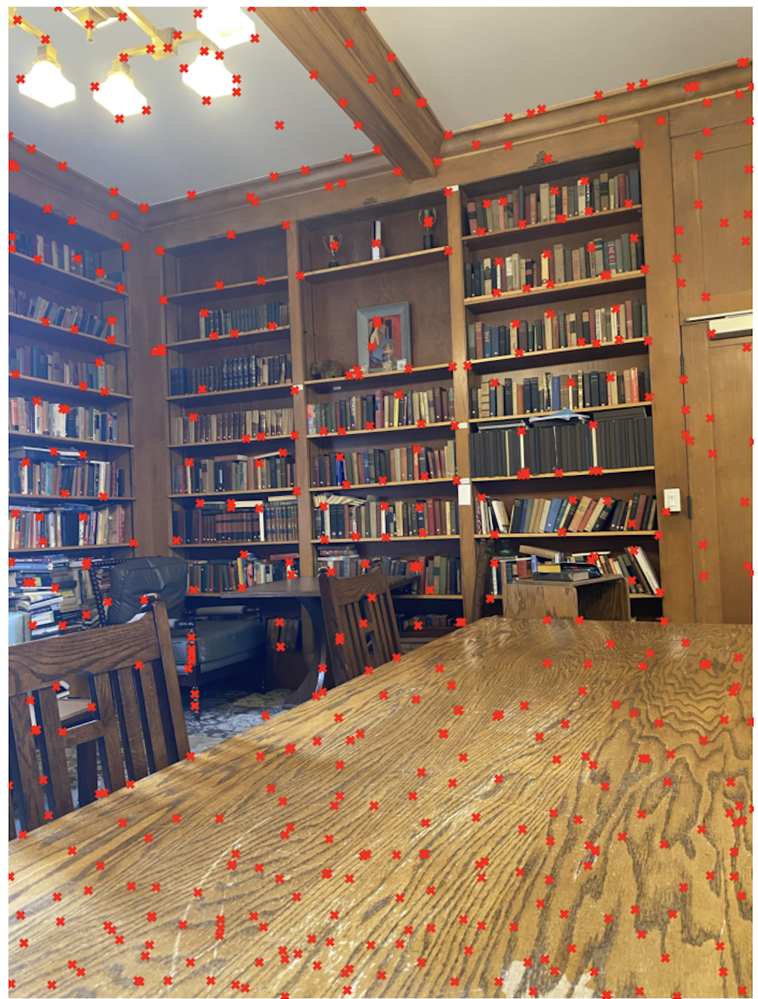
B.2 & B.3: featrue descriptors and matchin
Given a good set of feature points, a descriptor is extracted. Like the spec outlined, my FeatureDescriptorExtractor takes a 40x40 window around each point, blurs it to prevent aliasing, and then samples down to an 8x8 rea. Then, I take the area and ensure that it gets bias/gain normalized so that light changes don't affect it. Then I end up with a This 64-dimensional vector which is the features fingerprint.
The FeatureMatcher class then finds tentative matches. It gets SSD between all descriptors in image 1 and image 2. For every feature the two nearest neighbors NN1, and NN2 are found. Then with Lowe's ratio test, any match is kept iff the ratio SSD(NN1)/ SSD(NN2) is below a threshod--which from looking at the paper I chose 0.6. This filters out ambiguous matches, where a feature is similar to myraid otehr ones.
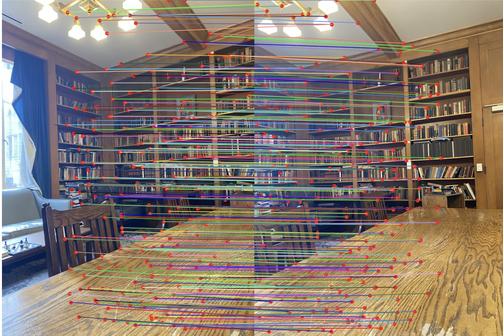
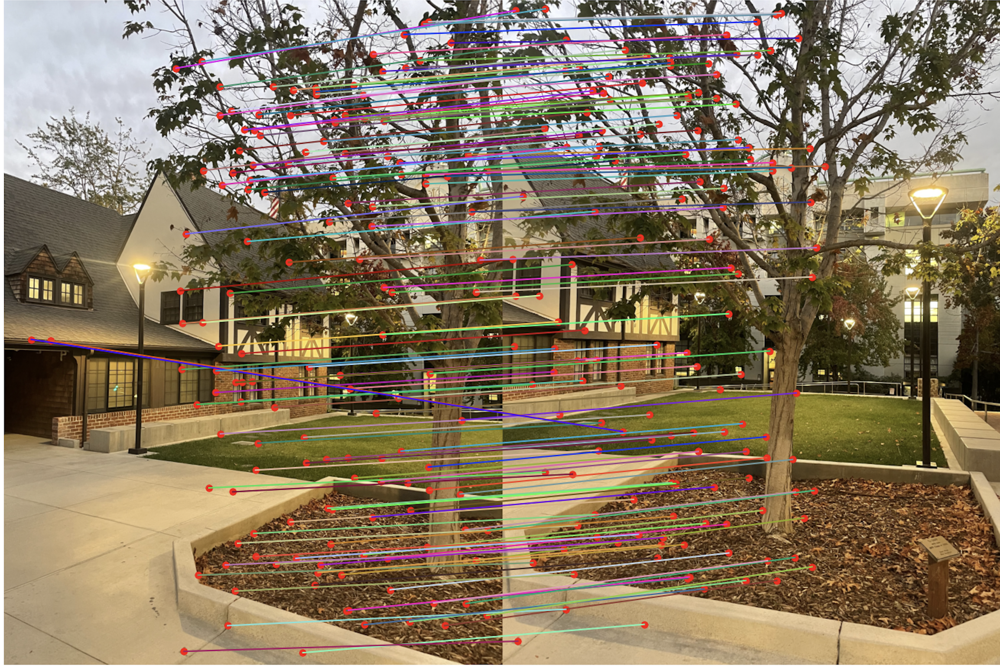
A Note on False Matches
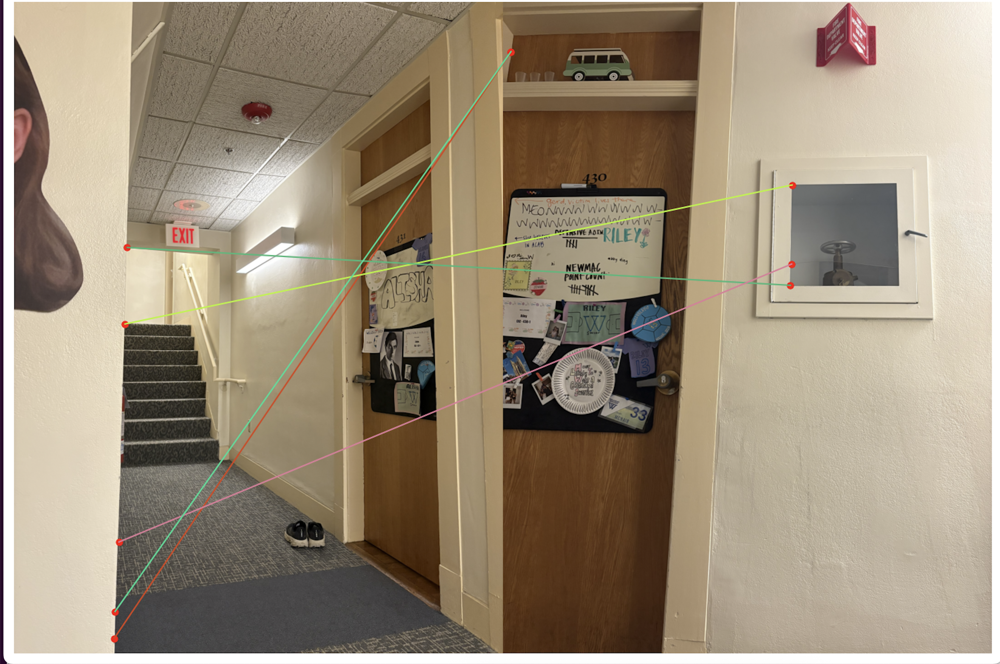
I thought it was interesting looking at tenative matches when I had two images that didn't have any overlap. I found this interesting becuase, there still were matches found by the algorithm. I believe this happened because the feature descriptors are not perfectly unique. Repetitive like paint and metal edges and the hallway compared to metal edgess simply produce descriptors that are mathematically very similar just by coincidenc. Although, there were far less matches in this example, which empahsies the point on having robust filtering step.
B.4: RANSAC for Homography
Still, tehre is a set of tentative matches which is noisy and has many outliers (like the false matches that I jsut mentioned prior). For the true geometric transformation, I used RANSAC (Random Sample Consensus), in my RansacHomographyEstimator class
This algorithm works as follows:
- Sample: At random, select 4 correspondence points from the tentative matches.
- Then, compute: a candidate homography matrix \(H\) from the 4 points
- Score: Project all points from img1 into img2 with the \(H\). Then count up the number of inliers. Inliers are points where the projected location is within a pixel threshold (5 pixels for example) of the matched location in image 2.
- Repeat: This happens for many iterations. The \(H\) that produces the largest set of inliers is naturally the deeted best model.
- Refinement: A new, more accurate homography is computed using all the inliers from the best model.
Final Mosaics: Manual vs. Automatic
Then with the homography from RANSAC, the images are warped and blended using the same MosaicBlender from Part A. It can be seen that even though I was so careful in selecting matching points, and did this process many times to try and get the best alignments, that the automatic approach produces much better mosaics.
Comparison 1
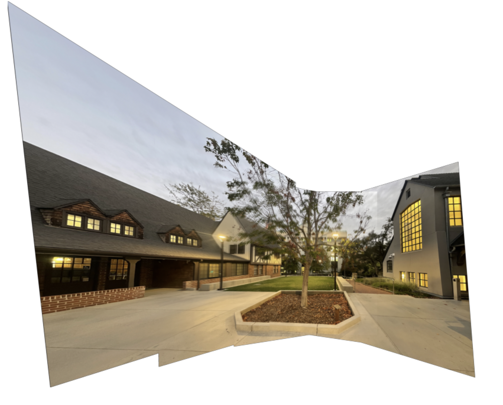
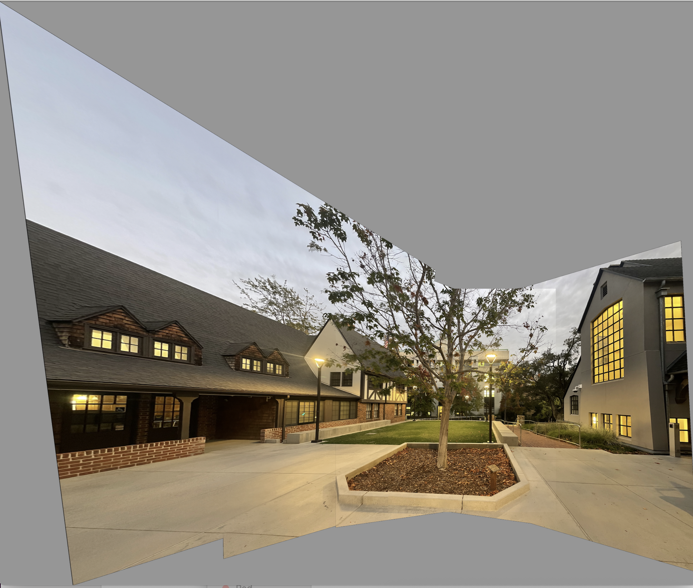
Comparison 2

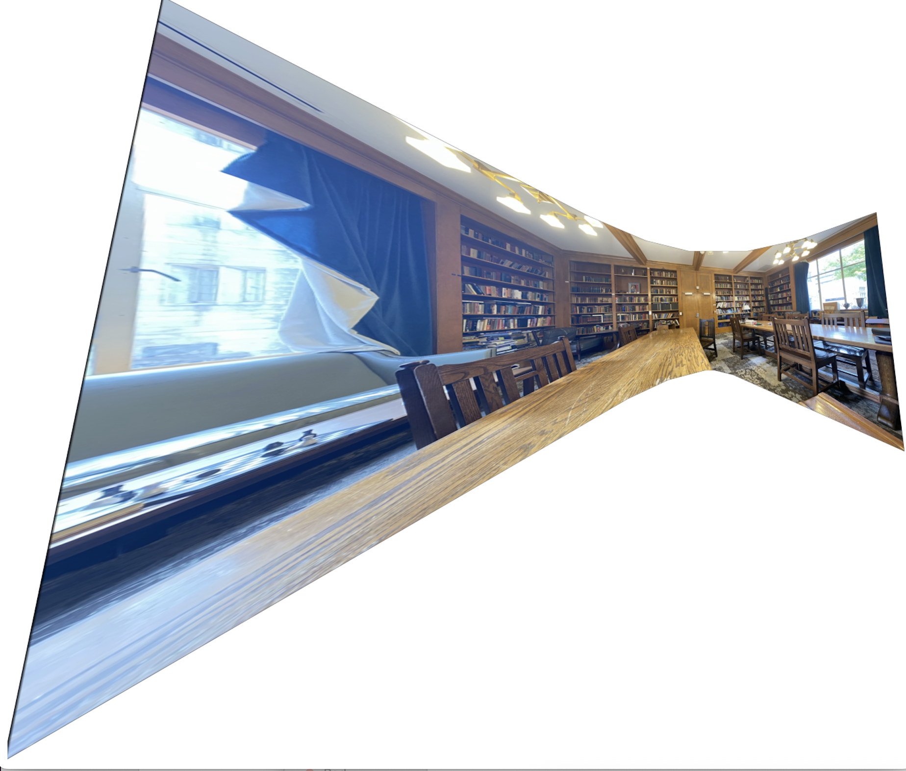
Additional Automatic Mosaic
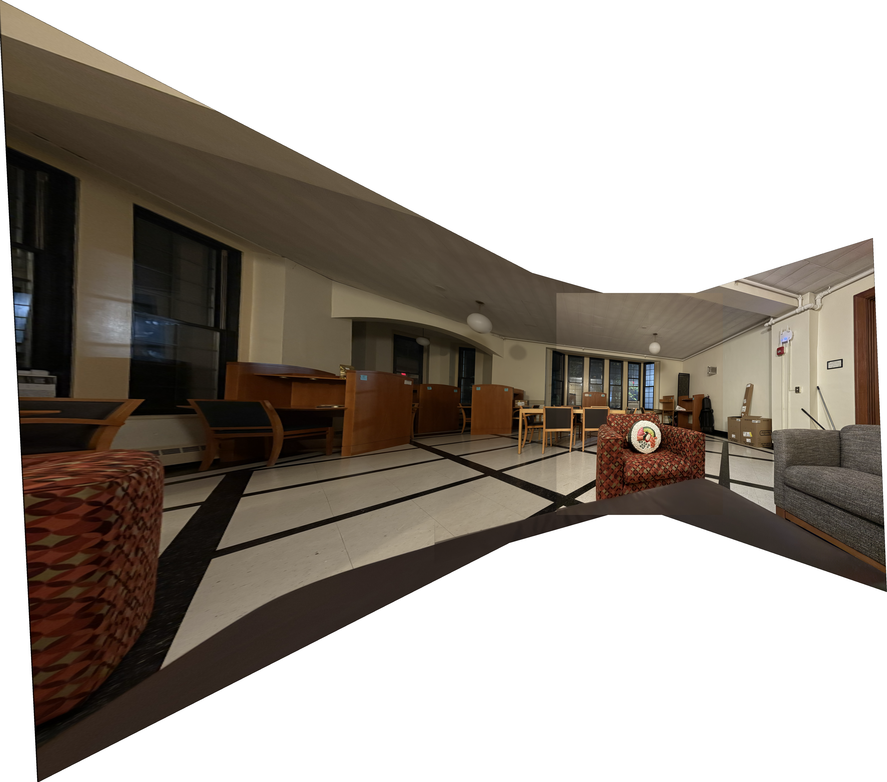